Private, guide-led journeys · Eritrea
Concrete, coral and altitude, taken slowly. A quieter way to read a country, with a person from ATA beside you.
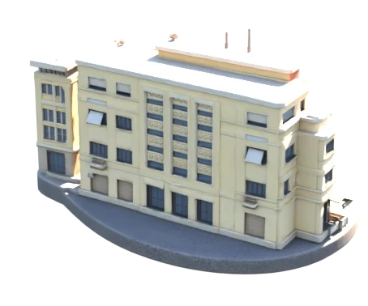
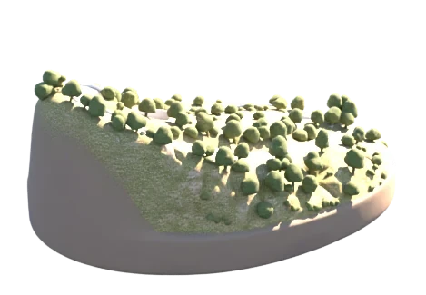
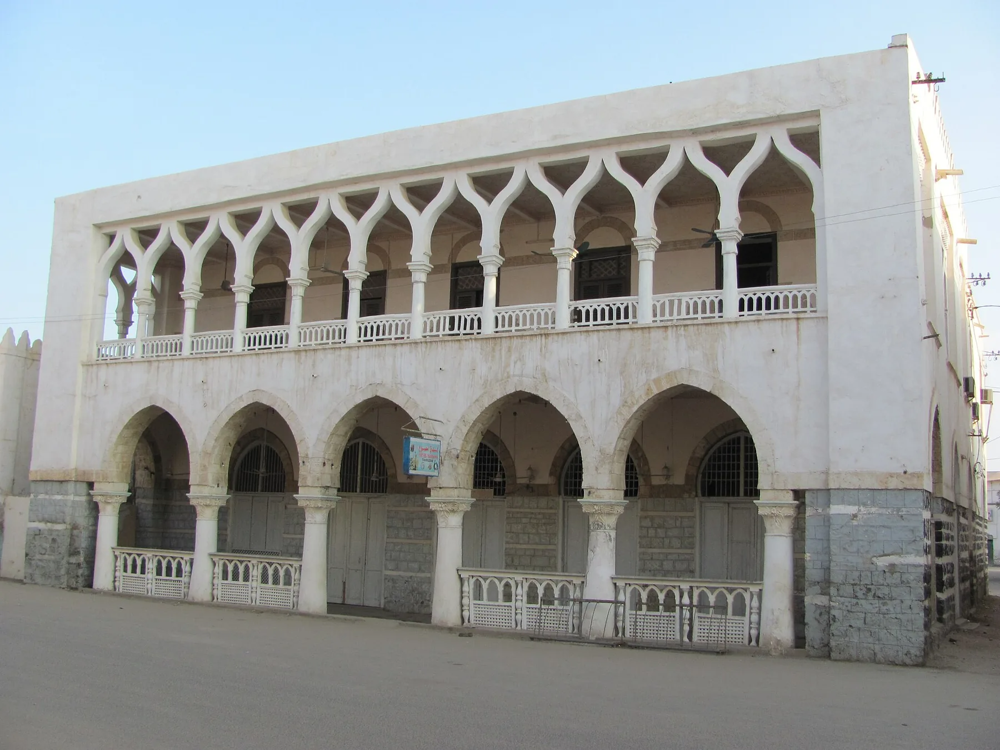
Massawa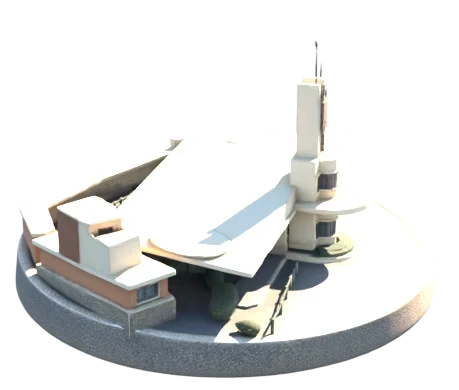
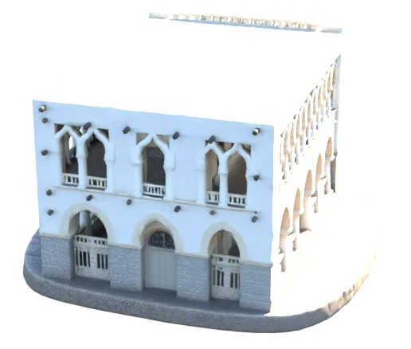
Request-based, with no automatic charges. Your journey is arranged only when someone at ATA confirms it to you. No payment is taken through this website.
Room I · Asmara
At about 2,325 m, Asmara's historic centre is a planned modernist city, laid out between 1893 and 1941 and inscribed by UNESCO in 2017 as Asmara: A Modernist African City.
The Fiat Tagliero service station (1938) holds its two concrete wings out over the forecourt. Cinema Impero (1937) sits on Harnet Avenue.
Room II · The escarpment
The road drops from plateau to sea level, and the country changes shape with it: terraces, dry slopes, the coastal plain, the salt light.
It is a long seated drive, and ATA will talk you through the day.
Room III · Massawa
Massawa's old town stands on a coral island, built largely of reef coral by Ottoman, Egyptian and Italian hands. The independence war damaged it, and parts remain ruins.
Hot, quiet and unlike anywhere else on the route.
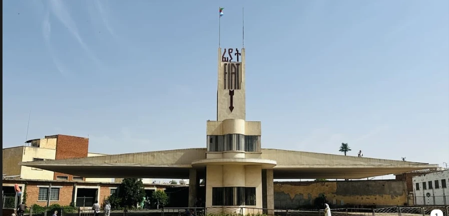
Fiat Tagliero, Asmara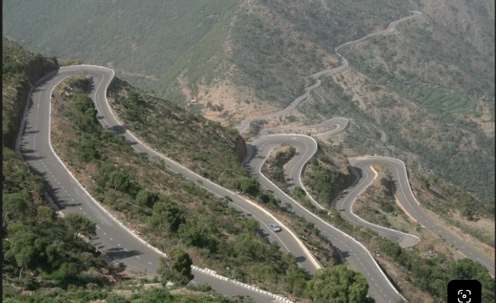
The road down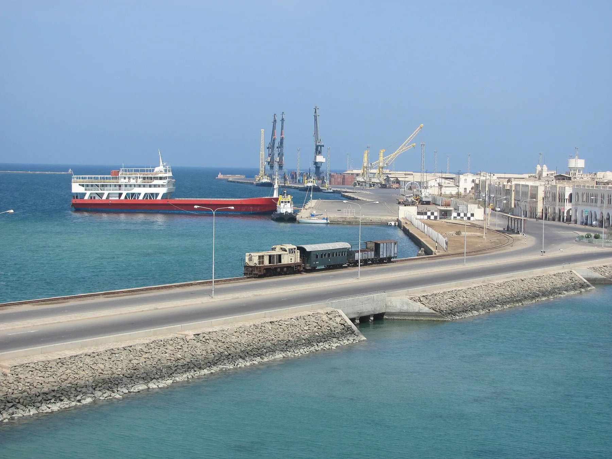
MassawaPlaces to begin the conversation
Tilt each plate with your pointer. Tell us what draws you and we will build the journey around it.
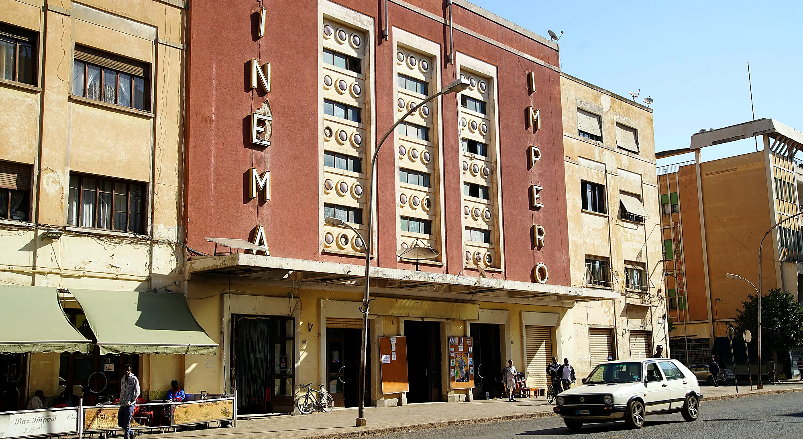
Asmara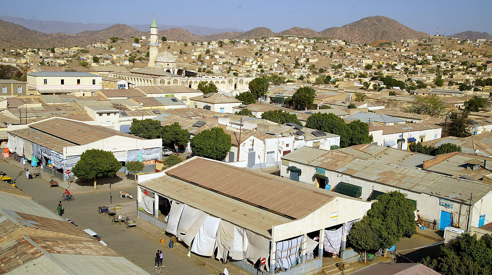
KerenIn miniature
Each model is built from a real photograph and keeps the real architecture and road layout. Scroll and they turn.
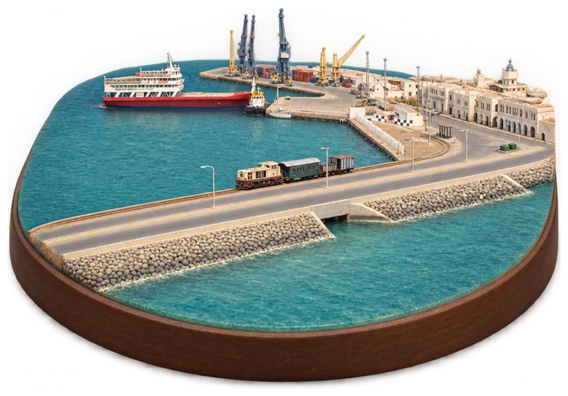
The route in outline
A sequence to talk through. Dates, prices and inclusions are shared personally by ATA once we know your plans.
Architecture, avenues and the working quarter of Medeber, read at walking pace with a guide.
The descent of about 2,300 m, as a journey in its own right.
Coral-stone streets and the Red Sea harbour.
Human-led
No forms to fight with and no surprises on the way.
Request a conversation